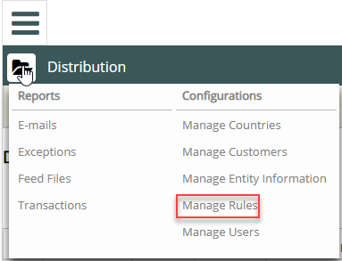
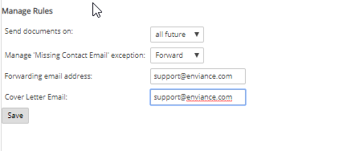

Distribution rules allow you to specify when to send documents and how to manage exceptions for missing contacts.
To manage Distribution rules:
Select the folder icon from the Distributions header and select Manage Rules from the Configurations menu.

The Manage Rules page displays.

Send documents on selection specifies when Vault sends the documents after receiving the feed file. Options are:
Manage Missing Contact Email exception selection specifies how Vault handles an email that cannot be delivered:
Cover Letter Email is the email address used in the body of a cover letter we send the purchaser with their SDS documents. It is also the address used to send requests for SDS distribution changes. For example:
If you wish to change your MSDS distribution preference, you can do so at any time by sending an email to <cover letter email>, or calling us toll free at (603) 433-2300.